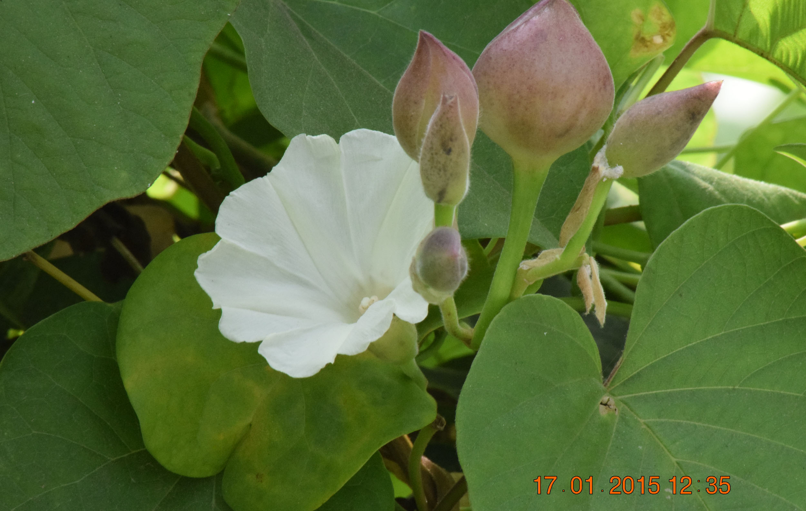

Basonym of Drug
Trivrut
Main Synonym
- Tribhandi
- Triputa
- Sarvanubhuti
- Sarala
- Suvaha
- Nisotha
- Rechani
Regional Name
- Gujarati: Nasotar
- Hindi: Nisota, Pitohari
- Tamil: Shivaide, Chivaide
- Telugu: Tella, Tegada
- Bengali: Teudi, Dudhkalmi
- English: Turpeth Root, Indian Jalap
- Marathi: Tenda, Futakari
Botanical Name
Operculina turpethum Silva Manso
Family
Convolvulaceae
Classification (Gana)
- Aacharya Charaka: Bhedaniya Mahakashaya
- Aacharya Sushruta: Shyamadi, Adhobhagahara Gana
- Acharya Vagbhata: Shyamadi Gana
External Morphology
A stout twinner
Useful Parts
Root bark, leaves
Important Phytoconstituent
- Beta-turpethins
- Scopoletin
- Alpha-turpethins
- Coumarin
- Turpethic Acid
Rasa Panchak
- Rasa: Tikta, Katu
- Guna: Laghu, Ruksha, Tikshna
- Virya: Ushna
- Vipaka: Katu
Action
Kaphapittahara
Therapeutic Indication
- Rechana (Laxative)
- Sothahara (Anti-inflammatory)
- Udarogahara (Treat abdominal disorder)
- Kamlahara (Treat jaundice)
- Jwarahara (Anti-pyretic)
- Krimighna (Anti-helminthic)
Therapeutic Uses
- Vibandh - Powder with hot water at night is useful to treat constipation.
- Abhishyanda - Rasakriya of Trivrut is applied with honey or sugar.
- Vatarakta - Decoction of Trivrut, Vidari, and Ikshu is beneficial in gout.
Dose
Powder: 1-3 gm, for Virechan: 10-20 gm
Formulations
- Trivrutadi Leha
- Trivrutadi Ghrita
- Avipatikar Churna
Adverse Effect
Not Known